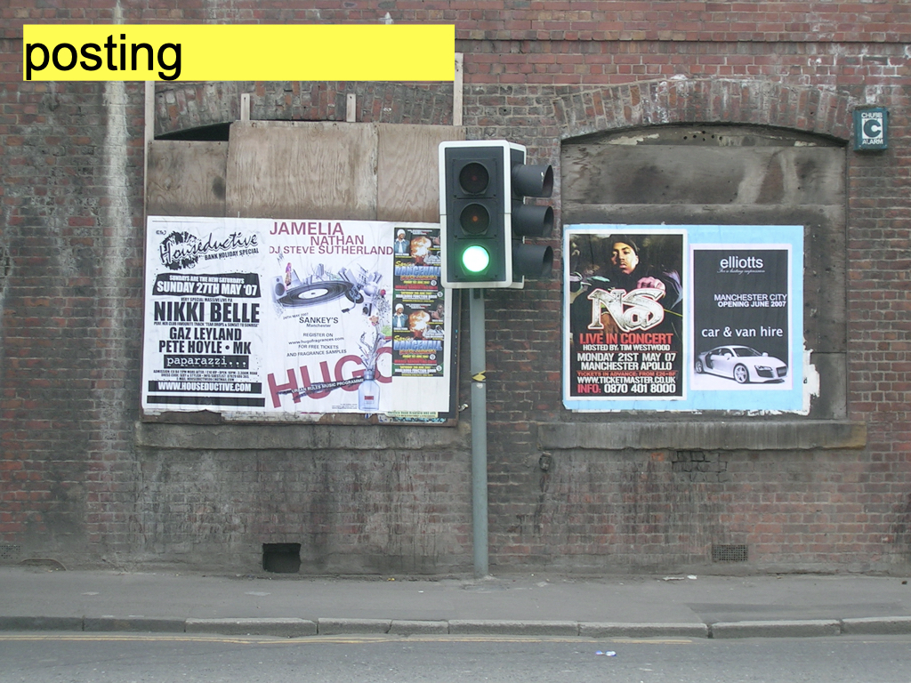

1 / 3

Acts of publishing are especially potent during crisis; they mark a rapidly changing timeline with recorded evidence of language, information, and narrative. Urgent acts of “making public” can mobilize community and inspire action in real time. In crisis, we see independent artists, activists, community organizers, scholars, and ordinary consumers directly engaging with the most sophisticated modes of publishing to record and communicate in real time, while those in positions of hegemonic power use those same tools to engineer and control our defining narratives.
2 / 3

From Facebook posts to presidential tweets to gaming livestreams to print-on-demand journals to mutual aid zines, stories are constructed and experiences shared; how and why they reach us and why we’re compelled to trust them (or not) is crucial to any understanding of how publishing operates right now.
3 / 3

Publics consume and amplify, and sometimes resist and refuse, those defining narratives; publishing is political. It has the power to compel, persuade, inform, attract, confuse, script, manipulate, and mobilize. And it’s here that we can locate the enormous paradox of contemporary publishing: its potential to oppress as well as to empower. How does hegemonic power shape today’s expansive, contemporary field of “making public?” As one of the principal tools of the colonizer, publishing has been used to dominate and exert control for centuries, with treaties, tracts, proclamations, archives, laws, history textbooks, and all of the ways in which knowledge is produced and retained through acts of printing, publishing, and archiving. We see evidence of this today in new (and returning) forms of propaganda and disinformation within the global rise of authoritarian rule, and in the extractive and exploitative practices of neoliberal hyper-capitalism.